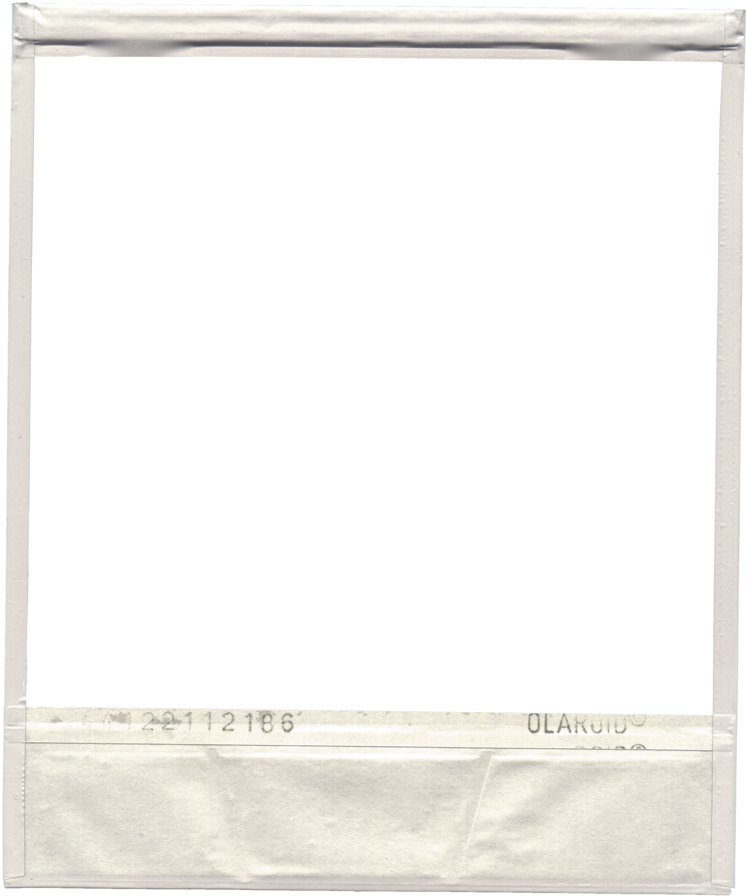

angie plumb.
//about
//projects
//contact

Projects
Resume
Education
UC San Diego Class of '26
Major: Computing and Arts (ICAM)
Minor: Computer Science (CSE)
Relevant
Coursework
CSE 12 - Basic Data Struct & OO Design
CSE 15L - Software Tools & Techniques Lab
ECE 15 - Engineering Computation
CSE 8A & 8B - Intro To Programming
VIS 41 - Design Communication
Job
Experience
Scripps Research Programming Intern
(April 2024 - Present)
UCSD Bookstore Computer Technician
(February 2023 - Present)
Skills
HTML/CSS, Java, Python, C, JavaScript,
Postgres SQL, PHP, Git
Adobe Suite (eg. After Effects,
Photoshop, Light Room)
Linux, Web Development, UI/UX, Media Editing,
Graphic Design